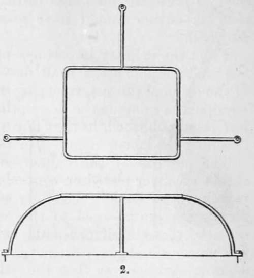
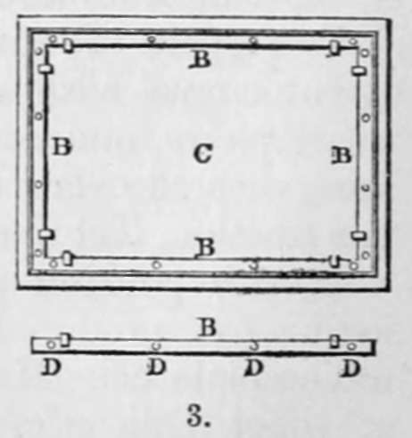

Chapter IV. Daguerreotype. The Discovery Of M. Daguerre. Section I. The Original Process Of Daguerre
Description
This section is from the book "A Manual Of Photography", by Robert Hunt. Also available from Amazon: A Manual of Photography.
Chapter IV. Daguerreotype. The Discovery Of M. Daguerre. Section I. The Original Process Of Daguerre
It has been already stated that Niepce and Daguerre having by accident discovered they were prosecuting experiments of the same kind, entered into a partnership. On the 5th Dec, 1829, Niepce communicated to Daguerre the particulars of the process employed by him, which has been already described (Chap. II.), under the term Heliography. Niepce died in July 1833, but he has left some letters which clearly show that he had been a most industrious investigator. One extract appears of particular importance :—" I repeat it, sir," he says, " I do not see that we can hope to derive any advantage from this process (the use of iodine) more than from any other method which depends upon the use of metallic oxides," etc. Again, he says, " a decoction of Thlaspi (Shepherd's purse), fumes of phosphorus, and particularly of sulphur, as acting on silver in the same way as iodine, and caloric, produce the same effects by oxidizing the metal, for from this cause proceeded in all these instances their extreme sensibility to light." After the death of M. Nicéphore Niepce, a new agreement was entered into between his son M. Isidore Niepce and Daguerre, that they should pursue their investigations in common, and share the profits, whatever they might eventually prove to be.
The discovery of Daguerre was reported to the world early in January, 1839 ; but the process by which his beautiful pictures were produced was not made known until the July following, after a bill was passed securing to himself a pension for life of 6000 francs, and to M. Isidore Niepce, the son of M. Niepce above mentioned, a pension for life of 4000 francs, with one-half in reversion to their widows. It was regretted, that after the French Government had thus liberally purchased the secret of the process of the Daguerreotype, for "the glory of endowing the world of science and of art with one of the most surprising discoveries that honour their native land" on the argument that " the invention did not admit of being secured by patent, for as soon as published all might avail themselves of its advantages," that its author should have guarded it by a patent right in England.
From the primary importance of this very beautiful branch of the photographic art, I shall devote some space to a description of the original process, reserving for the division devoted to the manipulatory details the description of each improvement which has been published, having any practical advantage, either by lessening the labour required, or reducing the expense.
The pictures of the daguerreotype are executed upon thin sheets of silver plated on copper. Although the copper serves principally to support the silver foil, the combination of the two metals appears to tend to the perfection of the effect. It is essential that the silver should be very pure. The thickness of the copper should be sufficient to maintain perfect flatness, and a smooth surface ; so that the images may not be distorted by any warping or unevenness. Unnecessary thickness is to be avoided on account of the weight.
The process is divided by Daguerre into five operations. The first consists in cleaning and polishing the plate, to fit it for receiving the sensitive coating on which light forms the picture. The second is the formation of the sensitive ioduret of silver over the face of the tablet. The third is the adjusting of the plate in the camera obscura, for the purpose of receiving the impression. The fourth is the bringing out of the photographic picture, which is invisible when the plate is taken from the camera. The fifth and last operation is to remove the sensitive coating, and thus prevent that susceptibility of change under luminous influence, which would otherwise exist, and quickly destroy the picture.
First Operation
A small phial of olive-oil — some finely carded cotton—a muslin bag of finely levigated pumice—a phial of nitric acid, diluted in the proportion of one part of acid to sixteen parts of water, are required for this operation. The operator must also provide himself with a small spirit-lamp, and an iron wire frame, upon which the plate is to be placed whilst being heated over the lamp. The following figures represent this frame. The first view is as seen from above. The second is a section and elevation, showing the manner in which it is fixed.
The plate being first powdered over with pumice, by shaking the bag, a piece of cotton dipped into the olive-oil is then carefully rubbed over it with a continuous circular motion, commencing from the centre. When the plate is well polished it must be cleaned by powdering it all over with pumice, and then rubbing it with dry cotton, always rounding and crossing the strokes, it being impossible to obtain a true surface by any other motion of the hand. The surface of the plate is now nibbed all over with a pledget of cotton, slightly wetted with the diluted nitric acid. Frequently change the cotton, and keep rubbing briskly, that the acid may be equally diffused over the silver, as, if it is permitted to run into drops, it stains the table. It will be seen when the acid has been properly diffused, from the appearance of a thin film equally spread over the surface. It is then to be cleaned off with a little pumice and dry cotton.
The plate is now placed on the wire frame—the silver upwards, and the spirit-lamp held in the hand, and moved about below it, so that the flame plays upon the copper. This is continued for five minutes, when a white coating is formed all over the surface of the silver; the lamp is then withdrawn. A charcoal fire may be used instead of the lamp. The plate is now cooled suddenly, by placing it on a mass of metal, or a stone floor. When perfectly cold, it is again polished with dry cotton and pumice. It is necessary that acid be again applied two or three times, in the manner before directed, the dry pumice being powdered over the plate each time, and polished off gently with dry cotton. Care must be taken not to breathe upon the plate, or touch it with the fingers, for the slightest stain upon the surface will be a defect in the drawing. It is indispensable that the last operation with the acid be performed immediately before it is intended for use. Let every particle of dust be removed, by cleaning all the edges, and the back also, with cotton. After the first polishing, the plate c is fixed on a board by means of four fillets, b b b b, of plated copper. To each of these are soldered two small projecting pieces, which hold the tablet near the corners ; and the whole is retained in a proper position by means of screws, as represented at d d d d.

Continue to:
- prev: Section V. Instantaneous Process
- Table of Contents
- next: The Original Process Of Daguerre. Part 2